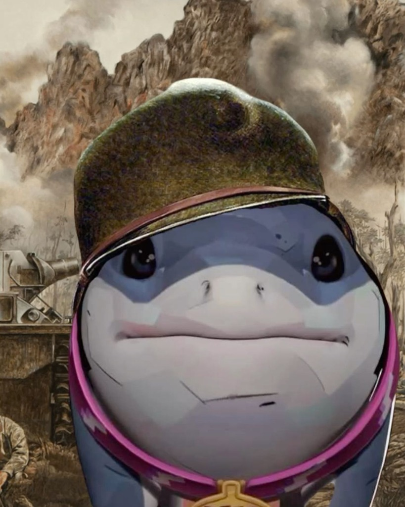

Hola, soy Ale 👋
Tengo 19 años, soy de República Dominicana y actualmente estudio Seguridad Informática en el ITLA. También hago desarrollo web por mi cuenta porque me gusta construir cosas que funcionen bien y se vean bien.
¿Qué hago?
Hago páginas web con HTML, CSS y JavaScript sin frameworks. Me interesa el tema de la seguridad — cómo se protegen las aplicaciones, cómo se rompen, y por qué importa hacerlo bien desde el principio.
Ver GitHub